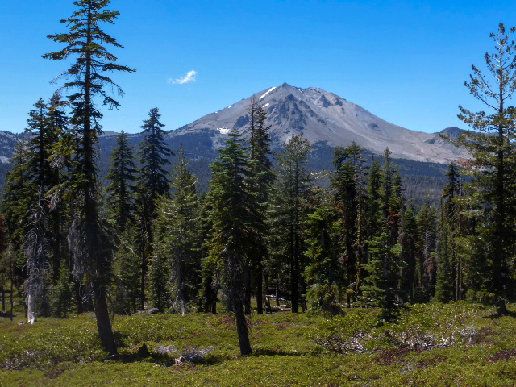
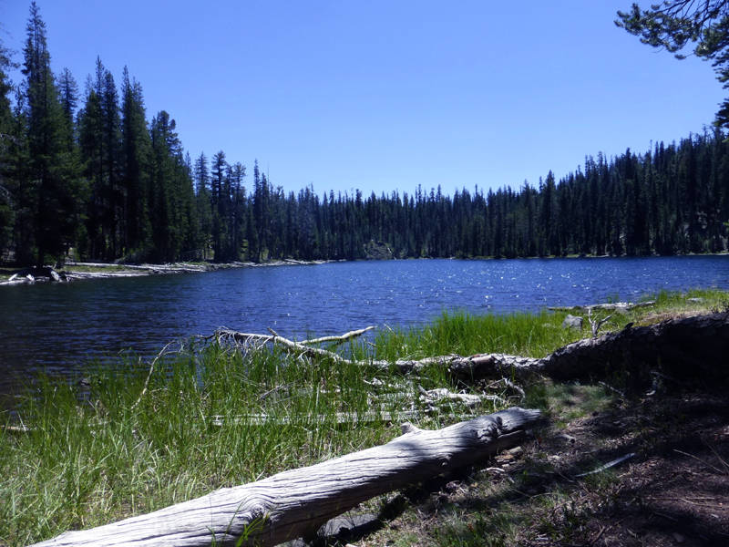
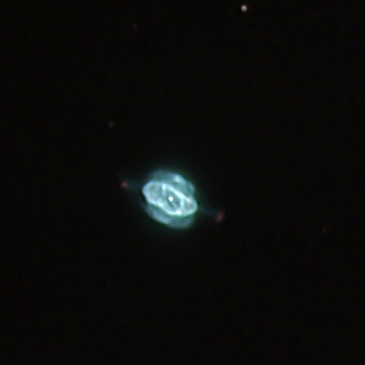

OR 7/24/14: Lassen Volcanic National Park
by Steve Gottlieb
| Third day at Lassen National Park.
During the late morning Mark Wagner and I spotted a very thin crescent moon (just over a day old) as well as Venus naked-eye to the west of the Sun. In the clear mountain air at high elevation, neither was difficult. Afterwards, we took an exhilirating hike to one of the nearby lakes. Once we climbed out of the Summit Lake basin, there was hardly anyone on the trail and it felt like we had the park practically to ourselves. Here's the view looking back at Mt Lassen as well as the spot we stopped along the lake. In the early evening Mark and I were invited over again to the Lowrey's camping site for dinner and shared good food and wine.   In the evening, we set up once again at the Bumpass Hell lot. The wind was less of a factor, so I was able to push the magnification up as high as 1000x on high surface brightness objects. Mostly I stuck with interesting galaxy pairs and groups, but also looked at a few planetaries, globulars and and a young star, still involved with gas and dust. |
|
 Saturn Nebula = NGC 7009 21 04 10.7 -11 21 49 Size: 30"x26"; Mag: 7.8 The Saturn Nebula was viewed at 1000x in good seeing. The intense, inner annulus is 30"x18" with a bright, moderately thick green rim and darker center. The central star was nearly visible steadily within the darker center. The oval annulus was slightly irregular in surface brightness. It was surrounded by a rounder, fainter envelope, which varied slightly in brightness, particularly on the north side which contained a noticeable knot. The fairly narrow ansae were readily visible, though brighter on the west side. The western ansae contained an obvious knot at the end, which was slightly elongated. The eastern ansae only had a weak brightening at the tip.
Palomar 14 Discovered by Sidney van den Bergh in 1958 by inspection of the POSS and confirmed as a globular by Halton Arp using the Palomar 200". The discovery announcement "A New Faint Globular Cluster" is at http://articles.adsabs.harvard.edu/full/1960PASP...72...48A. The brightest confirmed individual stars are mag 17.6. In my 24" it appeared as a very faint glow, fairly small, roughly 1.5' diameter, very low surface brightness with an ill-defined halo. The cluster is roughly centered 1' south of a mag 12.4 star, and a mag 14 star is very close to the center. The halo appears to reach the mag 12.5 star.
The NGC 6074 contact pair was nearly tangent at 260x and barely resolved at 375x. The brighter component, MCG +02-41-016, is on the north end and appeared faint, very small, round, 12" diameter. The fainter component, MCG +02-41-016, is attached at the south-southwest end (just 15" between centers!) and was very faint, round, 9" diameter. Located 1.0' ENE of a mag 11.9 star. NGC 6078, another close double system, lies 12' ESE. In addition, 2MFGC 13014, located 3.7' NE (outside the field of the image), appeared extremely faint, small, elongated 2:1 N-S, 15"x8". At B = 17.3, it required averted vision to glimpse. The main component of the NGC 6078 contact pair appeared moderately bright, fairly small, round, 30" diameter, increases to a very small bright core and down to a stellar nucleus. MCG +02-41-018 is attached to the south-southeast side, just 25" between centers! The companion appeared faint, very small, round, 12" diameter, occasional stellar nucleus. The pair was just resolved at 260x.
Shakhbazian 16 = Arp 330 I've viewed this chain a number of times since 1999, but it's always a treat with 5 galaxies neatly arranged in a 3.5' chain oriented north-south. In addition, a 6th galaxy in 3' further north. A 9th magnitude star is very close to the east and somewhat of a distraction, so high magnification helps. The members vary in brightness from 15.6B at the bright end (Shkh 16-1) to 17.3B (Shkh 16-5) at the faint end. The chain is located in Draco and not very easy to find (the nearest mag 6 star is 2.5 degrees away). Except for Shkh 16-1, which I logged as faint or fairly faint, the other members are all very faint, very small round glows, not much more than 12" in diameter.
At 375x, this post-merger system appeared fairly faint, fairly small, slightly elongated N-S, 0.4'x0.3'. Strongly concentrated with a very small bright core containing very bright, sharp stellar nucleus. With careful viewing, there was a very strong impression of an extension (tidal plume) extending south. The narrow tidal tail extending northeast on the SDSS image above was not seen. Pretty cool looking galaxy, huh? Vorontsov-Velyaminov called this system a "pair
of coalescent" galaxies. At 260x, the interacting pair appeared
faint, small, elongated 2:1 N-S, 0.4'x0.2'. Increasing the magnification
to 375x and 500x, two connected galaxies were visible. The northern
member (VV 711 NED1) is larger and elongated 3:2 N-S, ~12"x8".
The southern component (VV 711 NED2) is very faint, round, 8"
diameter. There was no clear gap between the two objects and the tail
to the north was not seen.
UGC 12110 triplet Using 375x, UGC 12110 appeared faint to fairly faint, fairly small, elongated 5:2 NW-SE, 0.5'x0.2', very weak concentration. A mag 14.5 star is off the northwest end. Brightest in a trio with MCG +02-57-006 1.8' ESE ("extremely faint and small, round, 10" diameter") and CGCG 429-012 2.0' SSW (faint, small, round, 0.3' diameter). This CGCG galaxy may be in the foreground as the catalogued redshift is 1/2 that of the other two galaxies.
This cometary reflection nebula was picked up at 260x unfiltered, but a better view was using 375x. The "head" of this cometary nebula is the mag 13 star HBC 687 (FU Ori type). It was clearly non-stellar, though only 3"-5" in diameter. The low surface brightness "tail" extends about 30"x10" to the north-northwest and fans very little. HBC 687 is a young pre-main sequence star with a collimated fan (single) and can be found 45' northwest of the planetary nebula NGC 6804.
NGC 7253 = Arp 278 This disrupted, interacting double system was observed at 260x. NGC 7253A, the northwest component, appeared fairly faint, moderately large, elongated 5:2 WNW-ESE, ~50"x20". A mag 12.5 star is 1.3' WNW, collinear with the major axis. A 7" pair of mag 15 stars is barely off the ESE end. NGC 7253B is attached at the ESE end of NGC 7253A, very close to the faint double, and appears very faint, fairly small, elongated 2:1 SW-NE, 30"x15". A mag 13.3 star is 0.7' E. Situated in a rich star field.
This is a kinematically confirmed (in 2012) polar-ring galaxy -- similar to the better known NGC 2685. Using 375x, it was fairly faint, fairly small, elongated 2:1 NW-SE, containing a bright bulging core and much fainter extensions. A mag 15.5 star is less than 30" E and a mag 13.2 star lies 0.8' SE. |